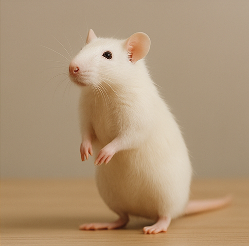
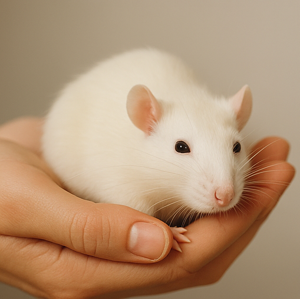
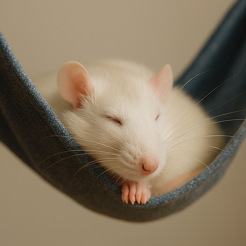

Las Aventuras de las Ratas Blancas: Un Viaje Más Allá del Queso
En una tranquila casa donde el sol entra por la ventana justo a las ocho de la mañana, viven dos pequeñas criaturas con corazones enormes y bigotes curiosos: Mía y Nube, dos ratas blancas que no conocen el significado de aburrimiento. Cada día empieza con una inspección detallada de su territorio: túneles de cartón, cuevas de tela y puentes colgantes improvisados. Son exploradoras por naturaleza. Mía, la más intrépida, suele liderar las misiones. Nube, más observadora pro igual de valiente, se encarga del plan de escape (que generalmente involucra treparse a la repisa y lanzarse con estilo). Un día, mientras su humana distraída abría una lata de atún, nuestras heroínas vieron su oportunidad. ¡El gran escape había comenzado! Atravesaron el pasillo a toda velocidad, zigzagueando como agentes secretos. Su objetivo: llegar al misterioso “Cuarto Prohibido” —un lugar del que sólo habían oído leyendas contadas en chillidos bajos desde la jaula..
En una tranquila casa donde el sol entra por la ventana justo a las ocho de la mañana, viven dos pequeñas criaturas con corazones enormes y bigotes curiosos: Mía y Nube, dos ratas blancas que no conocen el significado de aburrimiento. Cada día empieza con una inspección detallada de su territorio: túneles de cartón, cuevas de tela y puentes colgantes improvisados. Son exploradoras por naturaleza. Mía, la más intrépida, suele liderar las misiones. Nube, más observadora pro igual de valiente, se encarga del plan de escape (que generalmente involucra treparse a la repisa y lanzarse con estilo). Un día, mientras su humana distraída abría una lata de atún, nuestras heroínas vieron su oportunidad. ¡El gran escape había comenzado! Atravesaron el pasillo a toda velocidad, zigzagueando como agentes secretos. Su objetivo: llegar al misterioso “Cuarto Prohibido” —un lugar del que sólo habían oído leyendas contadas en chillidos bajos desde la jaula..
En una tranquila casa donde el sol entra por la ventana justo a las ocho de la mañana, viven dos pequeñas criaturas con corazones enormes y bigotes curiosos: Mía y Nube, dos ratas blancas que no conocen el significado de aburrimiento. Cada día empieza con una inspección detallada de su territorio: túneles de cartón, cuevas de tela y puentes colgantes improvisados. Son exploradoras por naturaleza. Mía, la más intrépida, suele liderar las misiones. Nube, más observadora pro igual de valiente, se encarga del plan de escape (que generalmente involucra treparse a la repisa y lanzarse con estilo). Un día, mientras su humana distraída abría una lata de atún, nuestras heroínas vieron su oportunidad. ¡El gran escape había comenzado! Atravesaron el pasillo a toda velocidad, zigzagueando como agentes secretos. Su objetivo: llegar al misterioso “Cuarto Prohibido” —un lugar del que sólo habían oído leyendas contadas en chillidos bajos desde la jaula.